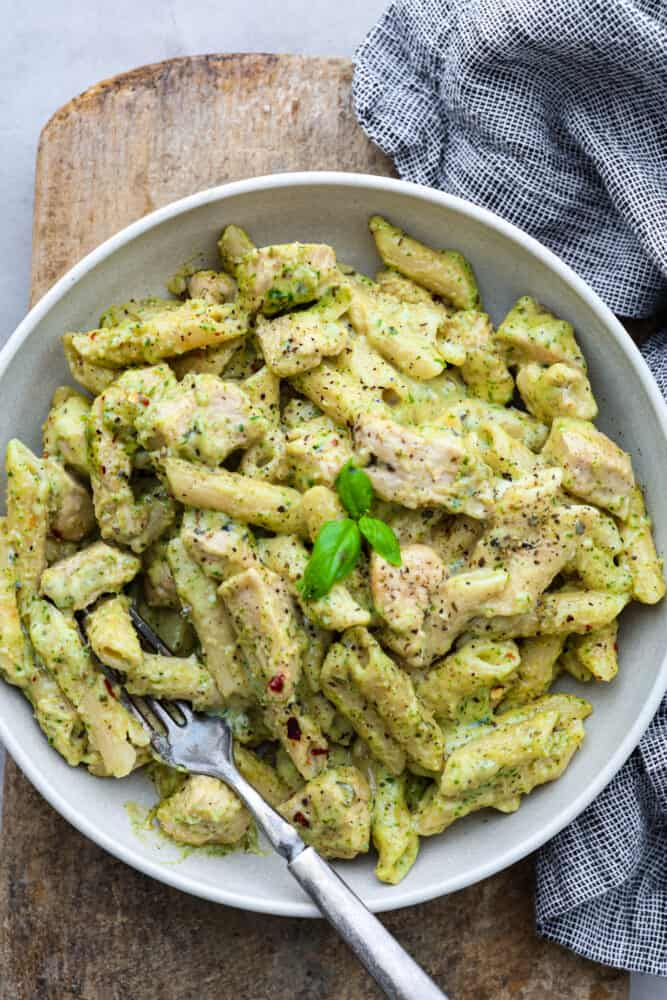

Pesto Pasta

Description
This top-rated pesto pasta recipe, which comes together in just 15 minutes, is the perfect quick and easy weeknight dinner!
This versatile pesto pasta recipy is easy to customize by adding your favorite protein, if you like. Chicken, sausage, and chickpeas are all delicious mix-ins. Store your leftover pesto pasta in an airtight container in the refrigerator for three to five days. Reheat in the microwave or on the stove.
Ingredients
- 1 (16 ouce) package pasta
- 2 tablespoons olive oil
- 1/2 cup chopped onion
- 2 1/2 tablespoons pesto or more to taste
- salt to taste
- freshly ground black pepper to taste
- 2 tabelspoons grated Parmesan cheese
Steps
- Gather all ingredients
- Fill a large pot with lightly salted water and bring to a roiling boil. Stir in pasta and return to a boil. Cook pasta uncovered, stirring occasionally, until tender yet firm to the bite, about 8 to 10 minutes. Drain and transfer into a large bowl.
- Meanwhile, heat oil in a frying pan over medium-low heat. Add onion; cook and stir until softened, about 3 minutes.
- Stir in pesto, salt, and pepper until warmed through
- Add pesto mixture to hot pasta; stir in grated cheese and toss well to coat
Back to Home